PHP string is a sequence of characters i.e., used to store and manipulate text. PHP supports only 256-character set and so that it does not offer native Unicode support. There are 4 ways to specify a string literal in PHP.
We can create a string in PHP by enclosing the text in a single-quote. It is the easiest way to specify string in PHP.
For specifying a literal single quote, escape it with a backslash (\) and to specify a literal backslash (\) use double backslash (\\). All the other instances with backslash such as \r or \n, will be output same as they specified instead of having any special meaning.
For Example
Following some examples are given to understand the single quoted PHP String in a better way:
Example 1
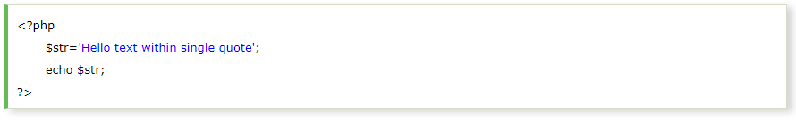Output:
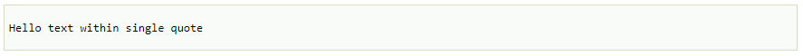We can store multiple line text, special characters, and escape sequences in a single-quoted PHP string.
Example 2
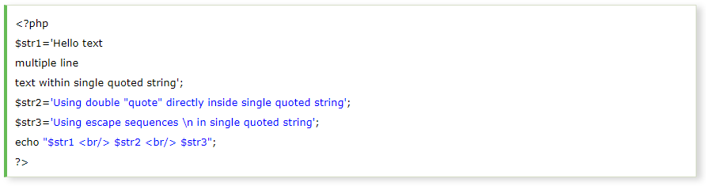Output:
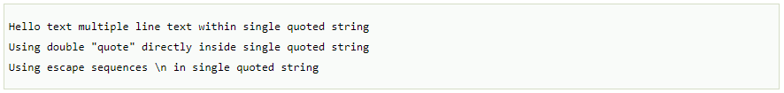Example 3
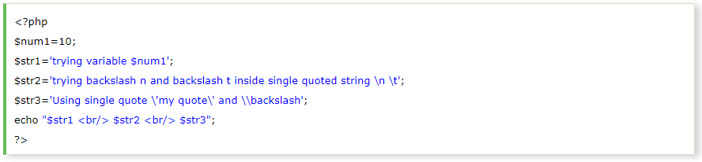Output:
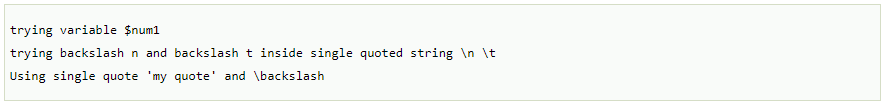In PHP, we can specify string through enclosing text within double quote also. But escape sequences and variables will be interpreted using double quote PHP strings.
Example 1
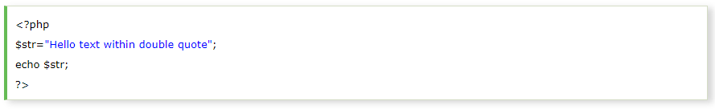Output:
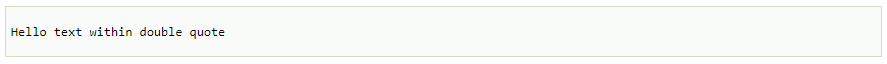Now, you can't use double quote directly inside double quoted string.
Example 2
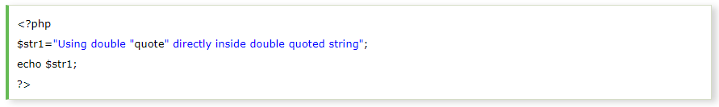Output :
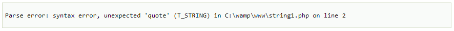We can store multiple line text, special characters and escape sequences in a double quoted PHP string.
Example 3
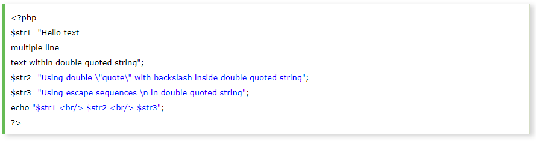Output:
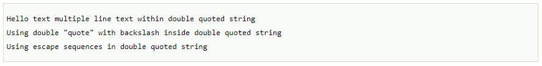In double quoted strings, variable will be interpreted.
Example 4
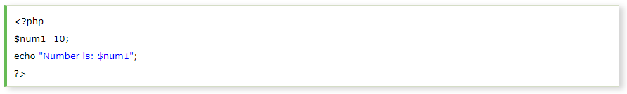Output:
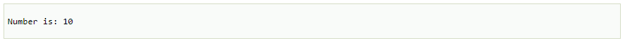Heredoc syntax (<<<) is the third way to delimit strings. In Heredoc syntax, an identifier is provided after this heredoc (<<<) operator, and immediately a new line is started to write any text. To close the quotation, the string follows itself and then again that same identifier is provided. That closing identifier must begin from the new line without any whitespace or tab.
The identifier should follow the naming rule that it must contain only alphanumeric characters and underscores, and must start with an underscore or a non-digit character.
Example
Valid Example
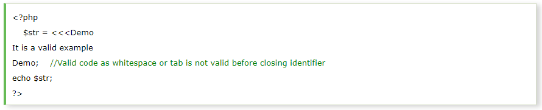Output
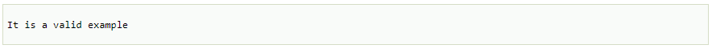Invalid Example
We cannot use any whitespace or tab before and after the identifier and semicolon, which means identifier must not be indented. The identifier must begin from the new line.
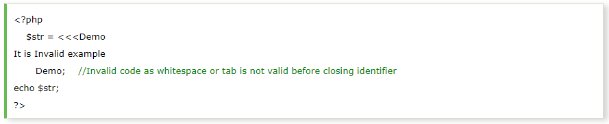This code will generate an error.
Output:
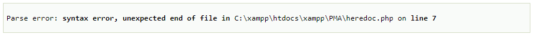Heredoc is similar to the double-quoted string, without the double quote, means that quote in a heredoc are not required. It can also print the variable's value.
Example
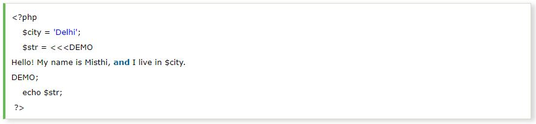Output
Example
We can add multiple lines of text here between heredoc syntax.
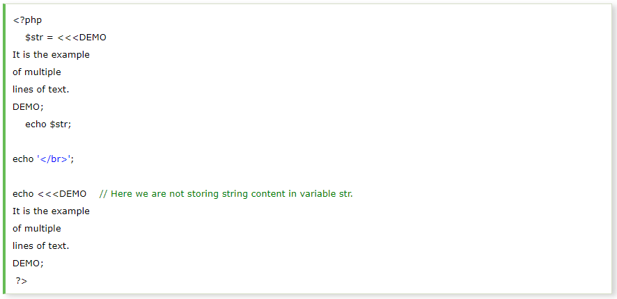Output
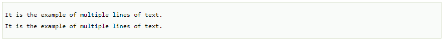Below are the example with class and their variable
Example
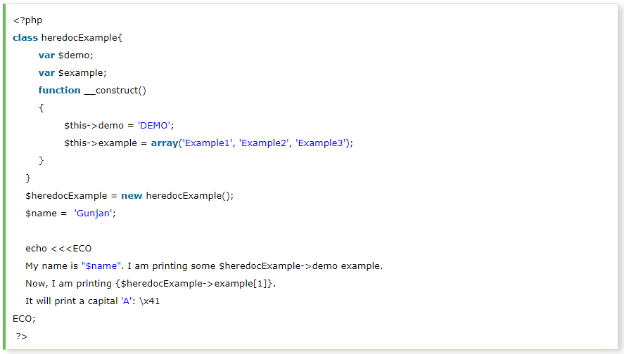Output
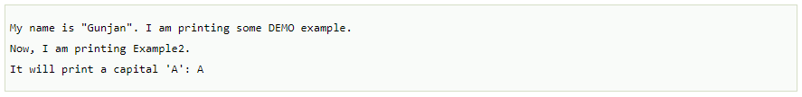Newdoc is similar to the heredoc, but in newdoc parsing is not done. It is also identified with three less than symbols <<< followed by an identifier. But here identifier is enclosed in single-quote, e.g. <<<'EXP'. Newdoc follows the same rule as heredocs.
The difference between newdoc and heredoc is that - Newdoc is a single-quoted string whereas heredoc is a double-quoted string.
Example-1:
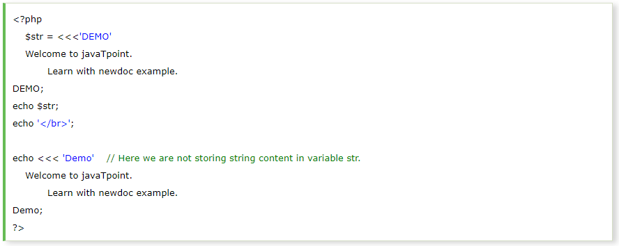Output:
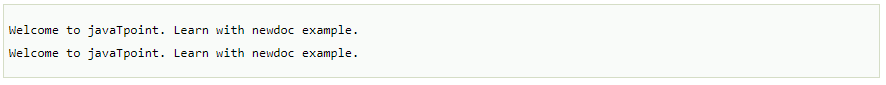Go to view page source and see the source of the program.
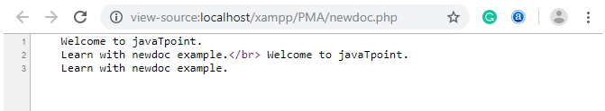Invalid Example
We cannot use any whitespace or tab before and after the identifier and semicolon, means identifier must not be indented. The identifier must begin from the new line. It is also invalid in newdoc same as heredoc.
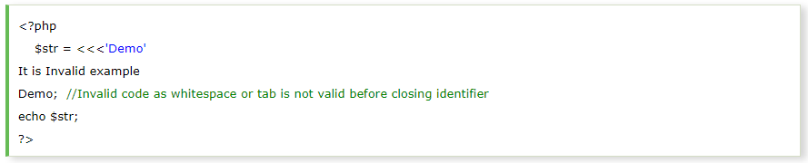This code will generate an error.
Output:
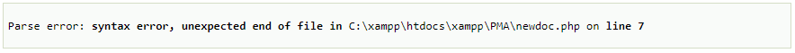